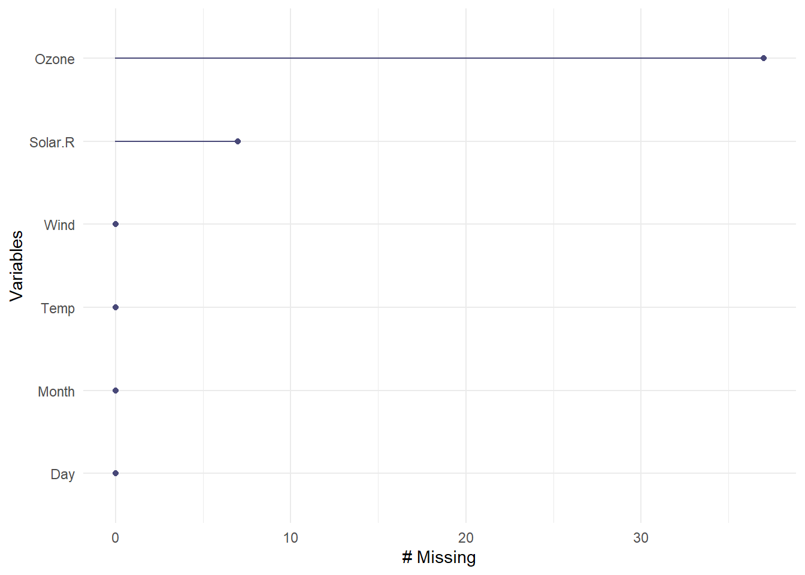
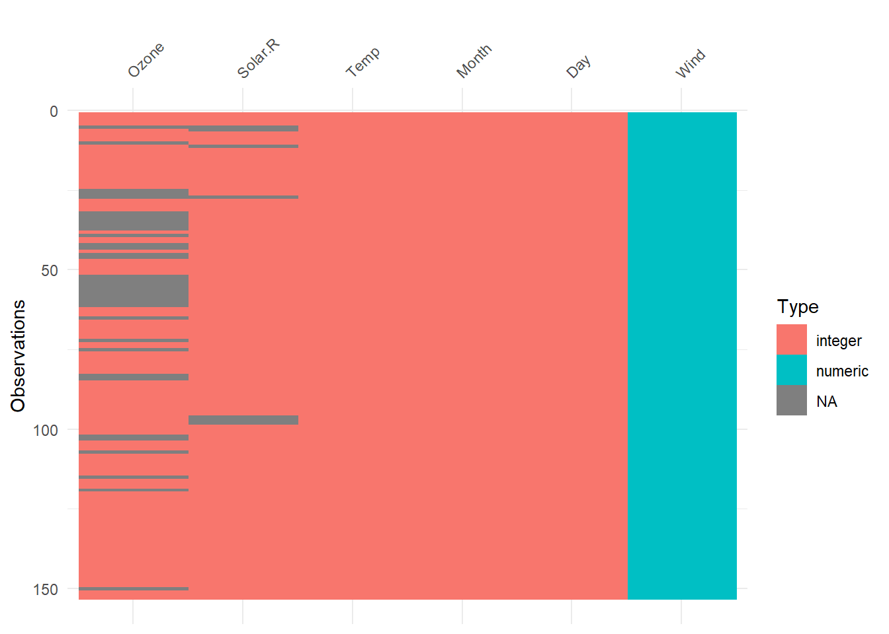
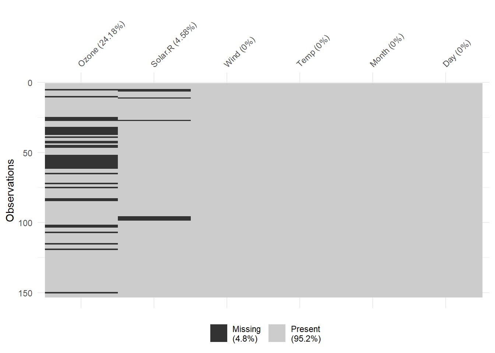
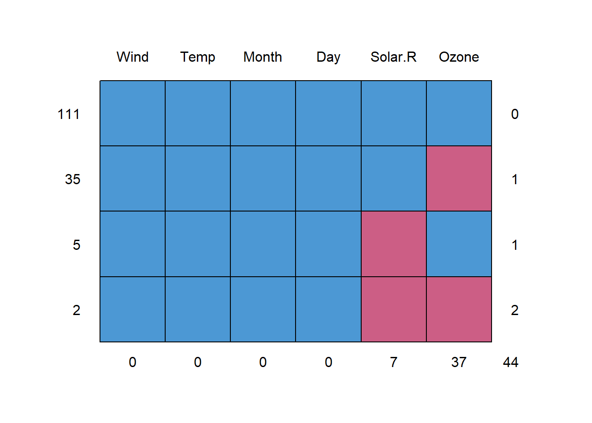

5Clase_EGDM_11
Rossy
2023-09-29
Tipos de NAs
- MAR
- NMAR
- MCAR
Data: airquality
## Ozone Solar.R Wind Temp Month Day
## 1 41 190 7.4 67 5 1
## 2 36 118 8.0 72 5 2
## 3 12 149 12.6 74 5 3
## 4 18 313 11.5 62 5 4
## 5 NA NA 14.3 56 5 5
## 6 28 NA 14.9 66 5 6Reconocer NAs (8)
1. summary()
## Ozone Solar.R Wind Temp
## Min. : 1.00 Min. : 7.0 Min. : 1.700 Min. :56.00
## 1st Qu.: 18.00 1st Qu.:115.8 1st Qu.: 7.400 1st Qu.:72.00
## Median : 31.50 Median :205.0 Median : 9.700 Median :79.00
## Mean : 42.13 Mean :185.9 Mean : 9.958 Mean :77.88
## 3rd Qu.: 63.25 3rd Qu.:258.8 3rd Qu.:11.500 3rd Qu.:85.00
## Max. :168.00 Max. :334.0 Max. :20.700 Max. :97.00
## NA's :37 NA's :7
## Month Day
## Min. :5.000 Min. : 1.0
## 1st Qu.:6.000 1st Qu.: 8.0
## Median :7.000 Median :16.0
## Mean :6.993 Mean :15.8
## 3rd Qu.:8.000 3rd Qu.:23.0
## Max. :9.000 Max. :31.0
## 3. gg_miss_var()
Realiza un gráfico de ggplot del número de NAs por cada
variable.
Los ordena de mayor a menor.
El argumento show_pct = TRUE: muestra en porcentaje.

4. vis_dat()
Nos muestra todo el dataframe: las filas son las observaciones y las
columnas son las variables.
En la leyenda aparece el tipo de dato (entero, numérico, cadena, etc) y
también aparece los NAs, representados por el colore gris.

5. vis_miss()
A comparación de vis_dat() que se enfoca en el tipo
de dato, solo se enfoca en valores NAs y valores completos.
Por defecto muestra en porcentaje, pero se puede ocultar mediante el
argumento show_perc = FALSE y show_perc_col =
FALSE.
Más ejemplos:
- https://cran.r-project.org/web/packages/visdat/readme/README.html
- https://cran.r-project.org/web/packages/visdat/vignettes/using_visdat.html

6. md.pattern()
En la practica, es usado para conjunto de datos con pequeño
número de columnas.
Muestra patrones de data perdida.
Muestra una imagen compuesta por cuadrados, donde los NAs son los de
color morado y la data presente de color azul
Siempre en la primera fila, habla de los casos completos, y a partir de
la segunda fila de los NAs.
Y a partir de la segunda fila, la suma total da el total de
FILAS con NA.
En la primera fila siempre muestra los casos completos: En este caso
tenemos 111 registros que no cuentan con NAs.
En la segunda fila, hay 35 casos en la variable Ozone
que son NAs.
En la tercera fila, hay 5 casos en la variable Solar.R
que son NAs.
En la cuarta fila, hay 2 casos en las variables Ozone y
Solar.R que son NAs.
Es decir; hay (35 + 5 + 2 = 42) filas con NAs en la
base de datos.
La tabla que aparece después contiene la misma información, solo que
con 1 y 0, donde:
0: NA
1: Data completa
La ultima fila marginal muestra el total de NAs por
variable.
La última columna marginal muestra el total de columnas
que tiene NAs.
El número que aparece en la esquina última es la suma de NAs por
columnas (no esta tomando en cuenta las repeticiones).
Links:
- http://rismyhammer.com/ml/MICE.html
- https://rianneschouten.github.io/mice_ampute/vignette/ampute.html
- https://stefvanbuuren.name/fimd/missing-data-pattern.html

## Wind Temp Month Day Solar.R Ozone
## 111 1 1 1 1 1 1 0
## 35 1 1 1 1 1 0 1
## 5 1 1 1 1 0 1 1
## 2 1 1 1 1 0 0 2
## 0 0 0 0 7 37 447. md.pairs()
Una alternativa a ms.pattern() es
md.pairs().
Se basa en tomar pares de variables, donde:
r: Data completa
m: NA
rr: Ambas variables tiene data completa.
rm: La primera variable tiene data completa y la
segunda NA.
mr: La primera variable tieme NA y la segunda data
completa.
mm: Ambas variables tiene NA.
Entonces, para la columnas (Ozone, Solar,R):
- Hay 111 pares donde ambas variables tienen data completa.
(rr)
- Hay 5 pares, donde Ozone tiene data completa y Solar.R tiene NA.
(rm)
- Hay 35 pares, donde Ozone tiene NA y Solar.R tiene data completa
(mr)
- Hay 2 pares, donde ambas variables tienen NA.
(mm)
Tomar en cuenta que la suma de todos estos casos da igual al número de registros (111 + 5 + 35 + 2 = 153).
## $rr
## Ozone Solar.R Wind Temp Month Day
## Ozone 116 111 116 116 116 116
## Solar.R 111 146 146 146 146 146
## Wind 116 146 153 153 153 153
## Temp 116 146 153 153 153 153
## Month 116 146 153 153 153 153
## Day 116 146 153 153 153 153
##
## $rm
## Ozone Solar.R Wind Temp Month Day
## Ozone 0 5 0 0 0 0
## Solar.R 35 0 0 0 0 0
## Wind 37 7 0 0 0 0
## Temp 37 7 0 0 0 0
## Month 37 7 0 0 0 0
## Day 37 7 0 0 0 0
##
## $mr
## Ozone Solar.R Wind Temp Month Day
## Ozone 0 35 37 37 37 37
## Solar.R 5 0 7 7 7 7
## Wind 0 0 0 0 0 0
## Temp 0 0 0 0 0 0
## Month 0 0 0 0 0 0
## Day 0 0 0 0 0 0
##
## $mm
## Ozone Solar.R Wind Temp Month Day
## Ozone 37 2 0 0 0 0
## Solar.R 2 7 0 0 0 0
## Wind 0 0 0 0 0 0
## Temp 0 0 0 0 0 0
## Month 0 0 0 0 0 0
## Day 0 0 0 0 0 08. dplyr
Permite mostrar el total de NAs por fila.
## Ozone Solar.R Wind Temp Month Day
## 1 37 7 0 0 0 0Si queremos filtrar que tiene NA de una variable en particular:
## Ozone Solar.R Wind Temp Month Day
## 1 NA NA 14.3 56 5 5
## 2 NA 194 8.6 69 5 10
## 3 NA 66 16.6 57 5 25
## 4 NA 266 14.9 58 5 26
## 5 NA NA 8.0 57 5 27
## 6 NA 286 8.6 78 6 1
## 7 NA 287 9.7 74 6 2
## 8 NA 242 16.1 67 6 3
## 9 NA 186 9.2 84 6 4
## 10 NA 220 8.6 85 6 5
## 11 NA 264 14.3 79 6 6
## 12 NA 273 6.9 87 6 8
## 13 NA 259 10.9 93 6 11
## 14 NA 250 9.2 92 6 12
## 15 NA 332 13.8 80 6 14
## 16 NA 322 11.5 79 6 15
## 17 NA 150 6.3 77 6 21
## 18 NA 59 1.7 76 6 22
## 19 NA 91 4.6 76 6 23
## 20 NA 250 6.3 76 6 24
## 21 NA 135 8.0 75 6 25
## 22 NA 127 8.0 78 6 26
## 23 NA 47 10.3 73 6 27
## 24 NA 98 11.5 80 6 28
## 25 NA 31 14.9 77 6 29
## 26 NA 138 8.0 83 6 30
## 27 NA 101 10.9 84 7 4
## 28 NA 139 8.6 82 7 11
## 29 NA 291 14.9 91 7 14
## 30 NA 258 9.7 81 7 22
## 31 NA 295 11.5 82 7 23
## 32 NA 222 8.6 92 8 10
## 33 NA 137 11.5 86 8 11
## 34 NA 64 11.5 79 8 15
## 35 NA 255 12.6 75 8 23
## 36 NA 153 5.7 88 8 27
## 37 NA 145 13.2 77 9 27## [1] 37Si queremos filtrar que contenga NA en la dos variables a la vez:
## Ozone Solar.R Wind Temp Month Day
## 1 NA NA 14.3 56 5 5
## 2 NA NA 8.0 57 5 27## [1] 2Si queremos filtrar al menos un NA en dos variables a la vez:
## Ozone Solar.R Wind Temp Month Day
## 1 NA NA 14.3 56 5 5
## 2 28 NA 14.9 66 5 6
## 3 NA 194 8.6 69 5 10
## 4 7 NA 6.9 74 5 11
## 5 NA 66 16.6 57 5 25
## 6 NA 266 14.9 58 5 26
## 7 NA NA 8.0 57 5 27
## 8 NA 286 8.6 78 6 1
## 9 NA 287 9.7 74 6 2
## 10 NA 242 16.1 67 6 3
## 11 NA 186 9.2 84 6 4
## 12 NA 220 8.6 85 6 5
## 13 NA 264 14.3 79 6 6
## 14 NA 273 6.9 87 6 8
## 15 NA 259 10.9 93 6 11
## 16 NA 250 9.2 92 6 12
## 17 NA 332 13.8 80 6 14
## 18 NA 322 11.5 79 6 15
## 19 NA 150 6.3 77 6 21
## 20 NA 59 1.7 76 6 22
## 21 NA 91 4.6 76 6 23
## 22 NA 250 6.3 76 6 24
## 23 NA 135 8.0 75 6 25
## 24 NA 127 8.0 78 6 26
## 25 NA 47 10.3 73 6 27
## 26 NA 98 11.5 80 6 28
## 27 NA 31 14.9 77 6 29
## 28 NA 138 8.0 83 6 30
## 29 NA 101 10.9 84 7 4
## 30 NA 139 8.6 82 7 11
## 31 NA 291 14.9 91 7 14
## 32 NA 258 9.7 81 7 22
## 33 NA 295 11.5 82 7 23
## 34 78 NA 6.9 86 8 4
## 35 35 NA 7.4 85 8 5
## 36 66 NA 4.6 87 8 6
## 37 NA 222 8.6 92 8 10
## 38 NA 137 11.5 86 8 11
## 39 NA 64 11.5 79 8 15
## 40 NA 255 12.6 75 8 23
## 41 NA 153 5.7 88 8 27
## 42 NA 145 13.2 77 9 27## [1] 42
Por ejemplo, de la base de datos airquality, se tiene 153
registros, de los cuales:
- Ozone: 37 NA
- Solar.R:7 NA
- Ambas: 2 NA
Entonces:
- Solo Ozone: 35 NA
- Solo Solar.R: NA
Sustituir NAs
You can also embed plots, for example:

Note that the echo = FALSE parameter was added to the
code chunk to prevent printing of the R code that generated the
plot.